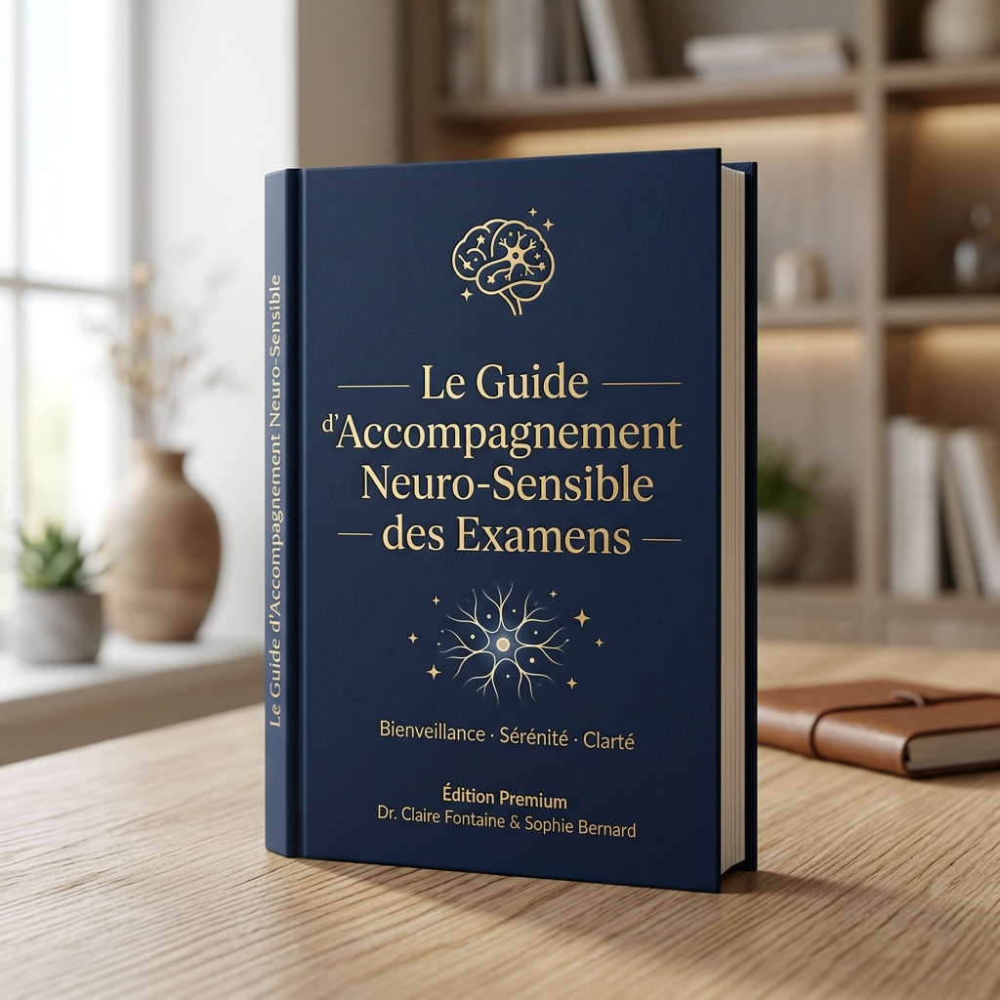

Pack Brain Boost
Préparation Mentale & Performance Cognitive pour les examens

Le Guide d'Accompagnement Neuro-Sensible des Examens
Ne laissez pas le stress saboter des mois de révisions. Découvrez la méthode INFC pour réduire le bruit mental et aider votre enfant à retrouver clarté et sérénité avant l'épreuve.
- Comprendre la différence entre fatigue et surcharge cognitive
- 3 routines simples pour défragmenter le cerveau avant de dormir
- Le protocole d'urgence en cas d'angoisse face à la feuille blanche
Vos données sont protégées. Aucun spam.
Reconnaissez‑vous l'un de ces 5 signaux ?
Si votre enfant présente 2 signaux ou plus, son cerveau a probablement besoin d'un soutien pour retrouver son rythme naturel.
📖 Il relit la même page sans retenir
Le cerveau « lit » mécaniquement mais n'encode plus. C'est un problème d'attention saturée, pas de lecture.
😴 Il s'endort en révisant malgré 8 h de sommeil
C'est une fatigue neurologique : le cerveau, submergé, se met en « mode veille » pour se protéger.
😤 Il devient irritable sans raison apparente
Crises de nerfs, pleurs soudains… Un système nerveux en alerte permanente, en mode « survie » et non « apprentissage ».
⏳ Il procrastine malgré l'urgence
Il SAIT qu'il doit réviser, il VEUT réviser, mais n'y arrive pas. Un mécanisme de protection d'un cerveau en fatigue cognitive.
🧩 Il oublie ce qu'il savait la veille
Le stress chronique libère du cortisol, qui interfère directement avec la consolidation des souvenirs.
Le Pack Brain Boost™ INFC
Un entraînement cérébral structuré qui aide le cerveau de votre enfant à fonctionner dans son état optimal pendant la période la plus exigeante de l'année.
- Entretien d'orientation avec un praticien certifié NeurOptimal®
- 8 séances de neurofeedback calibrées sur la période pré‑examens
- Plan d'hygiène cérébrale personnalisé (sommeil, alimentation, routines)
- Suivi de progression avec points réguliers
- Séances de 33 minutes dans un environnement calme et premium
- Disponible à Casablanca, Marrakech, Tanger & Kénitra
Le programme Brain Boost™ est un entraînement neurocognitif. Il ne remplace pas un suivi médical ou psychologique lorsque celui-ci est nécessaire.
8 séances. 8 compétences. 0 hasard.
Le cerveau ne se régule pas par magie. Voici la structure de votre parcours :
Aperçu du Reset Examen®
La méthode exacte enseignée à votre enfant face à la feuille blanche.
Diminuer le rythme cardiaque en 60 secondes.
Isoler l'attention auditive et visuelle des distractions.
À la fin des 8 séances, votre enfant saura…
Au-delà de la technologie, il repart avec une boîte à outils pour toute sa vie.
Une approche qui change la vie
Noté 5/5 par plus de 120 clients vérifiés sur Google.
« Vous avez aidé ma fille à s'améliorer dans un temps record. Tout le monde a senti ce changement — l'école, notre entourage. Vous avez réussi à rendre ma fille plus confiante et plus heureuse face à ses études. »
« Pendant les révisions, je faisais des nuits blanches et j'oubliais tout le lendemain à cause du stress. Grâce au Pack Brain Boost, j'ai retrouvé le sommeil et je suis arrivé serein le jour de l'examen. J'ai eu ma mention. »
Avant : Crises d'angoisse la veille des contrôles, procrastination, fatigue extrême.
Après 8 séances : Une capacité de concentration impressionnante, un comportement apaisé et une confiance retrouvée. Elle aborde la feuille blanche sans peur.
Utilisé par les meilleurs au monde


🧠 Test : Votre enfant souffre-t-il de fatigue cognitive ?
5 questions simples · 1 minute · Résultat immédiat
Ce test est fourni à titre indicatif et éducatif. Il ne remplace en aucun cas une évaluation médicale ou psychologique.
Prêt à voir la différence par vous-même ?
Faites un premier pas concret vers la régulation neuro-sensible de votre enfant avec cette offre exclusive.
Vous préférez vous informer avant d'agir ?
Parce que chaque cerveau est unique, l'intelligence s'accompagne à son rythme. Recevez nos ressources exclusives et décidez quand le moment est venu.
INFC — International Neurofeedback Center · Dr. Chadia Chakib, Fondatrice
Casablanca · Marrakech · Tanger · Kénitra · neuromaroc.com